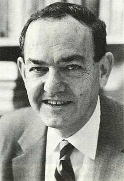
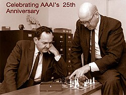

Herbert A. Simon | |
|---|---|
 Simon c. 1981 | |
| Born | Herbert Alexander Simon June 15, 1916 |
| Died | February 9, 2001 (aged 84) Pittsburgh, Pennsylvania, U.S. |
| Education | University of Chicago (BA, MA, PhD) |
| Known for | Bounded rationality Satisficing Information Processing Language Logic Theorist General Problem Solver |
| Spouse | |
| Children | 3 |
| Awards |
|
| Scientific career | |
| Fields | Economics Artificial intelligence Computer science Political science |
| Institutions | Carnegie Mellon University |
| Henry Schultz | |
Other academic advisors | Rudolf Carnap Nicholas Rashevsky Harold Lasswell Charles Merriam[1] John R. Commons[2] |
Doctoral students | |
Herbert Alexander Simon (June 15, 1916 – February 9, 2001) was an American scholar whose work influenced the fields of computer science, economics, and cognitive psychology. His primary research interest was decision-making within organizations and he is best known for the theories of "bounded rationality" and "satisficing".[5][6] He and Allen Newell received the ACM Turing Award in 1975, and he received the Nobel Memorial Prize in Economic Sciences in 1978.[7][8]
His research was noted for its interdisciplinary nature, spanning the fields of cognitive science, computer science, public administration, management, and political science.[9] He was at Carnegie Mellon University for most of his career, from 1949 to 2001,[10] where he helped found the Carnegie Mellon School of Computer Science, one of the first such departments in the world.
Notably, Simon was among the pioneers of several modern-day scientific domains such as artificial intelligence, information processing, decision-making, problem-solving, organization theory, and complex systems. He was among the earliest to analyze the architecture of complexity and to propose a preferential attachment mechanism to explain power law distributions.[11][12]
Herbert Alexander Simon was born in Milwaukee, Wisconsin, on June 15, 1916. Simon's father, Arthur Simon (1881–1948), was a Jewish[13] electrical engineer who came to the United States from Germany in 1903 after earning his engineering degree at Technische Hochschule Darmstadt.[14] An inventor, Arthur also was an independent patent attorney.[15] Simon's mother, Edna Marguerite Merkel (1888–1969), was an accomplished pianist whose Jewish, Lutheran, and Catholic ancestors came from Braunschweig, Prague and Cologne.[16] Simon's European ancestors were piano makers, goldsmiths, and vintners.
Simon attended Milwaukee Public Schools, where he developed an interest in science and established himself as an atheist. While attending middle school, Simon wrote a letter to "the editor of the Milwaukee Journal defending the civil liberties of atheists".[17] Simon's family introduced him to the idea that human behavior could be studied scientifically; his mother's younger brother, Harold Merkel (1892–1922), who studied economics at the University of Wisconsin under John R. Commons, became one of his earliest influences. Through Harold's books on economics and psychology, Simon discovered social science. Among his earliest influences, Simon cited Norman Angell for his book The Great Illusion and Henry George for his book Progress and Poverty. While attending high school, Simon joined the debate team, where he argued "from conviction, rather than cussedness" in favor of George's single tax.[18]
In 1933, Simon entered the University of Chicago, and, following his early influences, decided to study social science and mathematics. Simon was interested in studying biology but chose not to pursue the field because of his "color-blindness and awkwardness in the laboratory".[19] At an early age, Simon learned he was color blind and discovered the external world is not the same as the perceived world. While in college, Simon focused on political science and economics. Simon's most important mentor was Henry Schultz, an econometrician and mathematical economist.[1] Simon received both his B.A. (1936) and his Ph.D. (1943) in political science from the University of Chicago, where he studied under Harold Lasswell, Nicolas Rashevsky, Rudolf Carnap, Henry Schultz, and Charles Edward Merriam.[20] After enrolling in a course on "Measuring Municipal Governments," Simon became a research assistant for Clarence Ridley, and the two co-authored Measuring Municipal Activities: A Survey of Suggested Criteria for Appraising Administration in 1938.[21] Simon's studies led him to the field of organizational decision-making, which became the subject of his doctoral dissertation.
After receiving his undergraduate degree, Simon obtained a research assistantship in municipal administration that turned into the directorship of an operations research group at the University of California, Berkeley, where he worked from 1939 to 1942. By arrangement with the University of Chicago, during his years at Berkeley, he took his doctoral exams by mail and worked on his dissertation after hours.
From 1942 to 1949, Simon was a professor of political science and also served as department chairman at Illinois Institute of Technology in Chicago. There, he began participating in the seminars held by the staff of the Cowles Commission who at that time included Trygve Haavelmo, Jacob Marschak, and Tjalling Koopmans. He thus began an in-depth study of economics in the area of institutionalism. Marschak brought Simon in to assist in the study he was currently undertaking with Sam Schurr of the "prospective economic effects of atomic energy".[22]

From 1949 to 2001, Simon was a faculty member at Carnegie-Mellon University, in Pittsburgh, Pennsylvania. In 1949, Simon became a professor of administration and chairman of the Department of Industrial Management at Carnegie Institute of Technology ("Carnegie Tech"), which, in 1967, became Carnegie-Mellon University. Simon later also[23] taught psychology and computer science in the same university,[22] (occasionally visiting other universities[24]).
Seeking to replace the highly simplified classical approach to economic modeling, Simon became best known for his theory of corporate decision in his book Administrative Behavior. In this book he based his concepts with an approach that recognized multiple factors that contribute to decision making. His organization and administration interest allowed him to not only serve three times as a university department chairman, but he also played a big part in the creation of the Economic Cooperation Administration in 1948; administrative team that administered aid to the Marshall Plan for the U.S. government, serving on President Lyndon Johnson's Science Advisory Committee, and also the National Academy of Sciences.[22] Simon has made a great number of contributions to both economic analysis and applications. Because of this, his work can be found in a number of economic literary works, making contributions to areas such as mathematical economics including theorem-proving, human rationality, behavioral study of firms, theory of casual ordering, and the analysis of the parameter identification problem in econometrics.[25]
Administrative Behavior,[26] first published in 1947 and updated across the years, was based on Simon's doctoral dissertation.[27] It served as the foundation for his life's work. The centerpiece of this book is the behavioral and cognitive processes of humans making rational decisions. By his definition, an operational administrative decision should be correct, efficient, and practical to implement with a set of coordinated means.[27]
Simon recognized that a theory of administration is largely a theory of human decision making, and as such must be based on both economics and on psychology. He states:
[If] there were no limits to human rationality administrative theory would be barren. It would consist of the single precept: Always select that alternative, among those available, which will lead to the most complete achievement of your goals.[27] (p. xxviii)
Contrary to the "homo economicus" model, Simon argued that alternatives and consequences may be partly known, and means and ends imperfectly differentiated, incompletely related, or poorly detailed.[27]
Simon defined the task of rational decision making as selecting the alternative that results in the more preferred set of all the possible consequences. Correctness of administrative decisions was thus measured by:
The task of choice was divided into three required steps:[28]
Any given individual or organization attempting to implement this model in a real situation would be unable to comply with the three requirements. Simon argued that knowledge of all alternatives, or all consequences that follow from each alternative is impossible in many realistic cases.[26]
Simon attempted to determine the techniques or behavioral processes that a person or organization could bring to bear to achieve approximately the best result given limits on rational decision making.[27] Simon writes:
The human being striving for rationality and restricted within the limits of his knowledge has developed some working procedures that partially overcome these difficulties. These procedures consist in assuming that he can isolate from the rest of the world a closed system containing a limited number of variables and a limited range of consequences.[29]
Therefore, Simon describes work in terms of an economic framework, conditioned on human cognitive limitations: Economic man and Administrative man.
Administrative Behavior addresses a wide range of human behaviors, cognitive abilities, management techniques, personnel policies, training goals and procedures, specialized roles, criteria for evaluation of accuracy and efficiency, and all of the ramifications of communication processes. Simon is particularly interested in how these factors influence the making of decisions, both directly and indirectly.[26]
Simon argued that the two outcomes of a choice require monitoring and that many members of the organization would be expected to focus on adequacy, but that administrative management must pay particular attention to the efficiency with which the desired result was obtained.[26] 36–49
Simon followed Chester Barnard, who stated "the decisions that an individual makes as a member of an organization are quite distinct from his personal decisions".[30] Personal choices may be determined whether an individual joins a particular organization and continue to be made in his or her extra–organizational private life. As a member of an organization, however, that individual makes decisions not in relationship to personal needs and results, but in an impersonal sense as part of the organizational intent, purpose, and effect. Organizational inducements, rewards, and sanctions are all designed to form, strengthen, and maintain this identification.[26]212
Simon[27] saw two universal elements of human social behavior as key to creating the possibility of organizational behavior in human individuals: Authority (addressed in Chapter VII—The Role of Authority) and in Loyalties and Identification (Addressed in Chapter X: Loyalties, and Organizational Identification).
Authority is a well-studied, primary mark of organizational behavior, straightforwardly defined in the organizational context as the ability and right of an individual of higher rank to guide the decisions of an individual of lower rank. The actions, attitudes, and relationships of the dominant and subordinate individuals constitute components of role behavior that may vary widely in form, style, and content, but do not vary in the expectation of obedience by the one of superior status, and willingness to obey from the subordinate.[31]
Loyalty was defined by Simon as the "process whereby the individual substitutes organizational objectives (service objectives or conservation objectives) for his own aims as the value-indices which determine his organizational decisions".[32] This entailed evaluating alternative choices in terms of their consequences for the group rather than only for oneself or one's family.[33]
Decisions can be complex admixtures of facts and values. Information about facts, especially empirically proven facts or facts derived from specialized experience, are more easily transmitted in the exercise of authority than are the expressions of values. Simon is primarily interested in seeking identification of the individual employee with the organizational goals and values. Following Harold Lasswell,[34] he states that "a person identifies himself with a group when, in making a decision, he evaluates the several alternatives of choice in terms of their consequences for the specified group".[35]
Simon has been critical of traditional economics' elementary understanding of decision-making, and argues it "is too quick to build an idealistic, unrealistic picture of the decision-making process and then prescribe on the basis of such unrealistic picture".[36]
Herbert Simon rediscovered path diagrams, which were originally invented by Sewall Wright around 1920.[37]
Simon was a pioneer in the field of artificial intelligence, creating with Allen Newell the Logic Theory Machine (1956) and the General Problem Solver (GPS) (1957) programs. GPS may possibly be the first method developed for separating problem solving strategy from information about particular problems. Both programs were developed using the Information Processing Language (IPL) (1956) developed by Newell, Cliff Shaw, and Simon. Donald Knuth mentions the development of list processing in IPL, with the linked list originally called "NSS memory" for its inventors.[38] In 1957, Simon predicted that computer chess would surpass human chess abilities within "ten years" when, in reality, that transition took about forty years.[39] He also predicted in 1965 that "machines will be capable, within twenty years, of doing any work a man can do."[40]
In the early 1960s psychologist Ulric Neisser asserted that while machines are capable of replicating "cold cognition" behaviors such as reasoning, planning, perceiving, and deciding, they would never be able to replicate "hot cognition" behaviors such as pain, pleasure, desire, and other emotions. Simon responded to Neisser's views in 1963 by writing a paper on emotional cognition,[41] which he updated in 1967 and published in Psychological Review.[42] Simon's work on emotional cognition was largely ignored by the artificial intelligence research community for several years, but subsequent work on emotions by Sloman and Picard helped refocus attention on Simon's paper and eventually, made it highly influential on the topic.[43] Simon also collaborated with James G. March on several works in organization theory.[9]
With Allen Newell, Simon developed a theory for the simulation of human problem solving behavior using production rules.[44] The study of human problem solving required new kinds of human measurements and, with Anders Ericsson, Simon developed the experimental technique of verbal protocol analysis.[45] Simon was interested in the role of knowledge in expertise. He said that to become an expert on a topic required about ten years of experience and he and colleagues estimated that expertise was the result of learning roughly 50,000 chunks of information. A chess expert was said to have learned about 50,000 chunks or chess position patterns.[46]
He was awarded the ACM Turing Award, along with Allen Newell, in 1975. "In joint scientific efforts extending over twenty years, initially in collaboration with J.C. (Cliff) Shaw at the RAND Corporation, and subsequentially [sic] with numerous faculty and student colleagues at Carnegie Mellon University, they have made basic contributions to artificial intelligence, the psychology of human cognition, and list processing."[7]
Simon was interested in how humans learn and, with Edward Feigenbaum, he developed the EPAM (Elementary Perceiver and Memorizer) theory, one of the first theories of learning to be implemented as a computer program. EPAM was able to explain a large number of phenomena in the field of verbal learning.[47] Later versions of the model were applied to concept formation and the acquisition of expertise. With Fernand Gobet, he has expanded the EPAM theory into the CHREST computational model.[48] The theory explains how simple chunks of information form the building blocks of schemata, which are more complex structures. CHREST has been used predominantly, to simulate aspects of chess expertise.[49]
Simon has been credited for revolutionary changes in microeconomics. He is responsible for the concept of organizational decision-making as it is known today. He was the first to rigorously examine how administrators made decisions when they did not have perfect and complete information. It was in this area that he was awarded the Nobel Prize in 1978.[50]
At the Cowles Commission, Simon's main goal was to link economic theory to mathematics and statistics. His main contributions were to the fields of general equilibrium and econometrics. He was greatly influenced by the marginalist debate that began in the 1930s. The popular work of the time argued that it was not apparent empirically that entrepreneurs needed to follow the marginalist principles of profit-maximization/cost-minimization in running organizations. The argument went on to note that profit maximization was not accomplished, in part, because of the lack of complete information. In decision-making, Simon believed that agents face uncertainty about the future and costs in acquiring information in the present. These factors limit the extent to which agents may make a fully rational decision, thus they possess only "bounded rationality" and must make decisions by "satisficing", or choosing that which might not be optimal, but which will make them happy enough. Bounded rationality is a central theme in behavioral economics. It is concerned with the ways in which the process of decision-making influences the decision itself. The term is used to designate rational choices that take into account the cognitive limitations of both knowledge and cognitive capacity.
Further, Simon emphasized that psychologists invoke a "procedural" definition of rationality, whereas economists employ a "substantive" definition. Gustavos Barros argued that the procedural rationality concept does not have a significant presence in the economics field and has never had nearly as much weight as the concept of bounded rationality.[51] However, in an earlier article, Bhargava (1997) noted the importance of Simon's arguments and emphasized that there are several applications of the "procedural" definition of rationality in econometric analyses of data on health. In particular, economists should employ "auxiliary assumptions" that reflect the knowledge in the relevant biomedical fields, and guide the specification of econometric models for health outcomes.
Simon was also known for his research on industrial organization.[52] He determined that the internal organization of firms and the external business decisions thereof, did not conform to the neoclassical theories of "rational" decision-making.[53] Simon wrote many articles on the topic over the course of his life, mainly focusing on the issue of decision-making within the behavior of bounded rationality:
"Rational behavior, in economics, means that individuals maximize their utility function under the constraints they face (e.g., their budget constraint, limited choices, ...) in pursuit of their self-interest. This is reflected in the theory of subjective expected utility. Theories of bounded rationality relax one or more assumptions of standard expected utility theory."[54]
Simon determined that the best way to study these areas was through computer simulations. As such, he developed an interest in computer science. Simon's main interests in computer science were in artificial intelligence, human–computer interaction, principles of the organization of humans and machines as information processing systems, the use of computers to study (by modeling) philosophical problems of the nature of intelligence and of epistemology, and the social implications of computer technology.[55]
In his youth, Simon took an interest in land economics and Georgism, an idea known at the time as "single tax".[18] The system is meant to redistribute unearned economic rent to the public and improve land use. In 1979, Simon still maintained these ideas and argued that land value tax should replace taxes on wages.[56]
Some of Simon's economic research was directed toward understanding technological change in general and the information processing revolution in particular.[55]
Simon's work has strongly influenced John Mighton, developer of a program that has achieved significant success in improving mathematics performance among elementary and high school students.[57] Mighton cites a 2000 paper by Simon and two coauthors that counters arguments by French mathematics educator, Guy Brousseau, and others suggesting that excessive practice hampers children's understanding:[57]
[The] criticism of practice (called "drill and kill," as if this phrase constituted empirical evaluation) is prominent in constructivist writings. Nothing flies more in the face of the last 20 years of research than the assertion that practice is bad. All evidence, from the laboratory and from extensive case studies of professionals, indicates that real competence only comes with extensive practice... In denying the critical role of practice one is denying children the very thing they need to achieve real competence. The instructional task is not to "kill" motivation by demanding drill, but to find tasks that provide practice while at the same time sustaining interest.
— John R. Anderson, Lynne M. Reder, and Herbert A. Simon, "Applications and misapplications of cognitive psychology to mathematics education", Texas Educational Review 6 (2000)[58]
Simon received many top-level honors in life, including becoming a fellow of the American Academy of Arts and Sciences and a member of the American Philosophical Society in 1959;[59][60] election as a Member of the National Academy of Sciences in 1967;[61] APA Award for Distinguished Scientific Contributions to Psychology (1969); the ACM's Turing Award for making "basic contributions to artificial intelligence, the psychology of human cognition, and list processing" (1975); the Nobel Memorial Prize in Economics "for his pioneering research into the decision-making process within economic organizations" (1978); the National Medal of Science (1986); Founding Fellow of the Association for the Advancement of Artificial Intelligence (1990); the APA's Award for Outstanding Lifetime Contributions to Psychology (1993); ACM fellow (1994); and IJCAI Award for Research Excellence (1995).
Simon was a prolific writer and authored 27 books and almost a thousand papers. As of 2016, Simon was the most cited person in artificial intelligence and cognitive psychology on Google Scholar.[66] With almost a thousand highly cited publications, he was one of the most influential social scientists of the twentieth century.
Simon married Dorothea Pye in 1938. Their marriage lasted 63 years until his death. They had three children, Katherine, Peter, and Barbara.
From 1950 to 1955, Simon studied mathematical economics and during this time, together with David Hawkins, discovered and proved the Hawkins–Simon theorem on the "conditions for the existence of positive solution vectors for input-output matrices". He also developed theorems on near-decomposability and aggregation. Having begun to apply these theorems to organizations, by 1954 Simon determined that the best way to study problem-solving was to simulate it with computer programs, which led to his interest in computer simulation of human cognition. Founded during the 1950s, he was among the first members of the Society for General Systems Research.
Simon was a pianist and had a keen interest in the arts. He was a friend of Robert Lepper[68] and Richard Rappaport.[69] Rappaport also painted Simon's commissioned portrait at Carnegie Mellon University.[22] He was also a keen mountain climber. As a testament to his wide interests, he at one point taught an undergraduate course on the French Revolution.[5]
In January 2001, Simon underwent surgery at UPMC Presbyterian to remove a cancerous tumor in his abdomen. Although the surgery was successful, Simon later died from the complications that followed. His wife died a year later in 2002.[4]
Studies and models of decision-making are the themes that unify most of Simon's contributions.
His secular, scientific values came well before he was old enough to make such calculating career decisions. For example, while still in middle school, Simon wrote a letter to the editor of the Milwaukee Journal defending the civil liberties of atheists, and by high school, he was "certain" that he was "religiously an atheist", a conviction that never wavered.
{{cite web}}: CS1 maint: deprecated archival service (link)
{kind=link}
{kind=link}